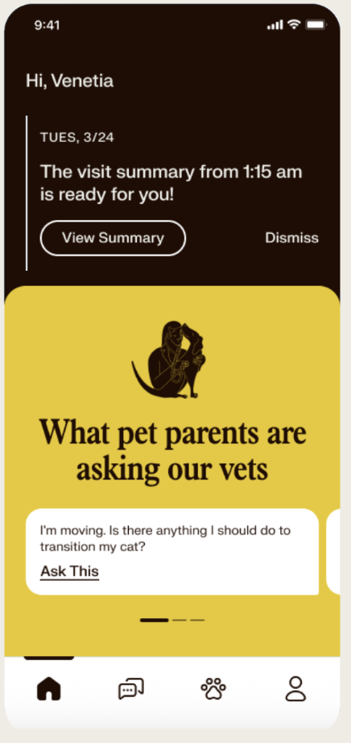
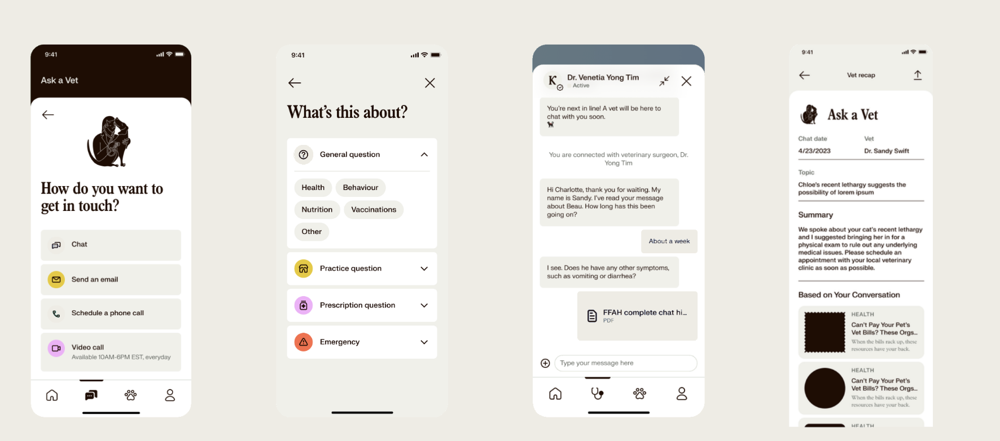
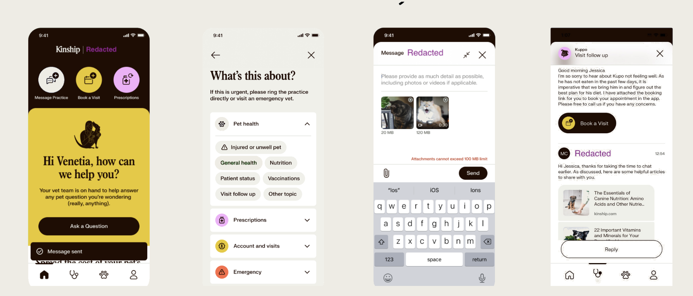
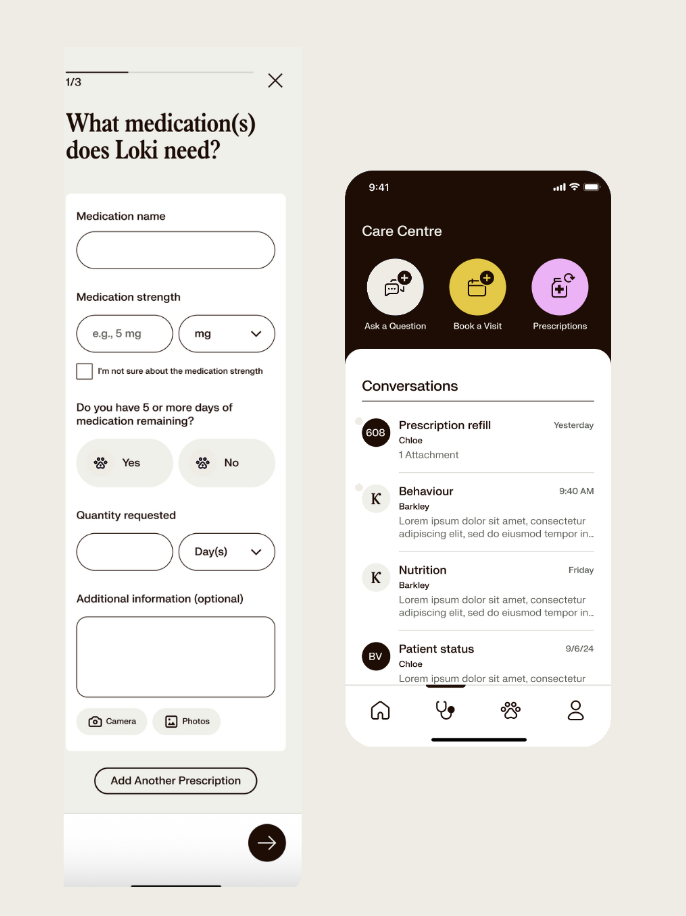
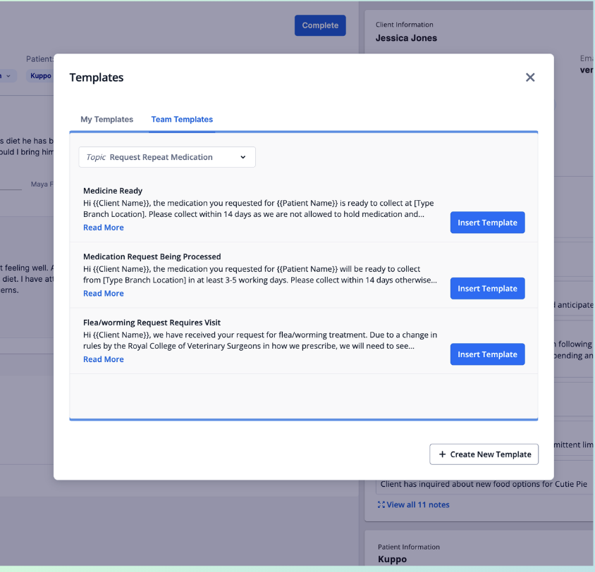
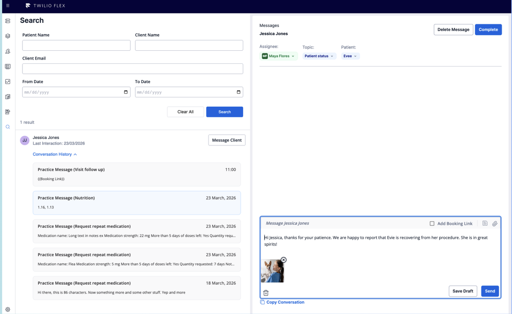

Inside Kinship:
the platform behind pet care.
A trusted resource for pet owners, combining educational content with on-demand access to veterinary care. Multiple threads of work. Consumer apps in two markets, the staff platform that powers them, and the comms tooling underneath.
The Kinship app: a vet in your pocket.
Built a trusted resource for pet owners, combining educational content with on-demand access to veterinary care.
67K
Users
62
NPS
4.4★
App Store
Steps Taken
- 01 Led end-to-end delivery aligning design, marketing, support, engineering, and QA on scope and release readiness.
- 02 Translated user research insights into prioritized features and actionable requirements.
- 03 Established release readiness processes, including QA alignment and rollback planning to mitigate downtime risks.
Outputs
- 01 Multi-channel support: chat, email, phone, and video consults.
- 02 Vet visit recaps combining clinician notes with personalized educational content.
- 03 Targeted push and email notifications to drive recurring engagement.

Multi-channel support (US).
Four ways for U.S. pet parents to reach a vet (chat, email, scheduled phone, and live video), funneled into one structured intake.
27K
US Users
4
Communication Channels
30K+
Consults
Ask a Vet: User Flow

Steps Taken
- 01 Mapped the 'How do you want to get in touch?' decision tree across health, behaviour, nutrition, vaccinations, and emergency.
- 02 Coordinated the live-chat handoff into Twilio Flex so a licensed veterinary surgeon picks up in real time.
- 03 Designed the post-consult Ask-a-Vet recap: vet name, topic, summary, plus 'Based on Your Conversation' content cards.
Outputs
- 01 Channel selector with availability windows (e.g. Video 10AM–6PM EST, every day).
- 02 Topic intake (General, Practice, Prescription, Emergency) so the right vet gets the right context.
- 03 PDF transcript export of the full conversation, delivered back to the pet parent.
Communication with your vet team (UK).
Ability for pet owners to directly contact their clinic staff
32
Clinics Live
1,500+
Clinic Staff
1,300+
Monthly Messages
Message Practice: User Flow

Steps Taken
- 01 Re-shaped the home screen around the three primary actions: Message Practice, Book a Visit, Prescriptions.
- 02 Negotiated regional compliance with clinical leads; built guardrails into the topic picker (Pet health / Prescriptions / Account / Emergency).
- 03 Supported rich attachments — photos, video up to 100MB — for owners describing symptoms before a visit.
Outputs
- 01 Practice messaging with topic chips: Injured or unwell pet · General health · Nutrition · Vaccinations · Visit follow-up.
- 02 Visit-follow-up threads with 'Book a Visit' CTAs and follow-up article cards inline.
- 03 Send-confirmation states with response-time expectation banners ('Message sent').
Prescription refill requests.
85% of clinic calls were prescription refills, overwhelming staff and leading to missed calls and poor client experience. We moved the workflow from phone support into structured asynchronous flows.
58% → 95%
Prescription Refill Improvement
7,000+
Refills Processed
Prescription Refill: User Flow

Steps Taken
- 01 Drove end-to-end execution from discovery through release, ensuring readiness across teams and systems.
- 02 Managed dependencies, mitigated risks, and ensured a smooth rollout across each clinic.
- 03 Designed a structured prescription-refill flow that captures the mandatory data clinics need upfront.
Outputs
- 01 Asynchronous messaging channel for clinics to communicate with clients.
- 02 Care Centre hub: Dedicated area where are messages are visible.
- 03 Multi-step refill capture: medication name, strength, days remaining, quantity, photos.
Templates & outbound messaging.
Templates enables clinic staff to safely handle dozens of follow-ups a day without re-typing the same disclaimers while outbound messages allow them to proactively connect with their clients.
~2 templates
Created per clinic
18%
Prescrition messages use templates
85% outbound
Patient status updates
Template Creation & Storage

Outbound Messaging

Steps Taken
- 01 Designed a two-tab template library (My Templates / Team Templates) scoped by clinic topic.
- 02 Built outbound search — patient, client, email, date range — so staff can initiate conversations safely.
- 03 Wired conversation history into the composer so staff see the last interaction before sending.
Outputs
- 01 Reusable templates with {{Client Name}} / {{Patient Name}} merge variables and one-click insertion.
- 02 Outbound messaging surface with full client conversation history and 'Message Client' kick-off.
- 03 Auto-Reply toggle per clinic with audit trail of which template was sent when.